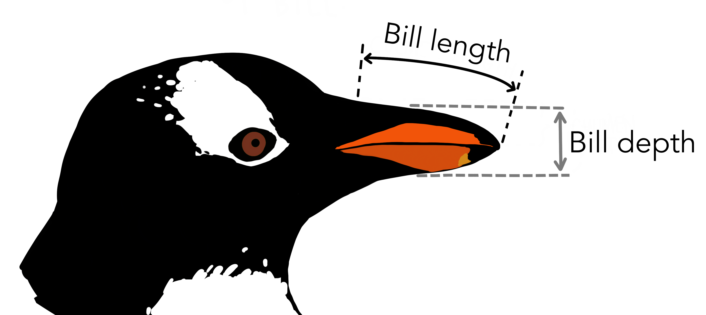
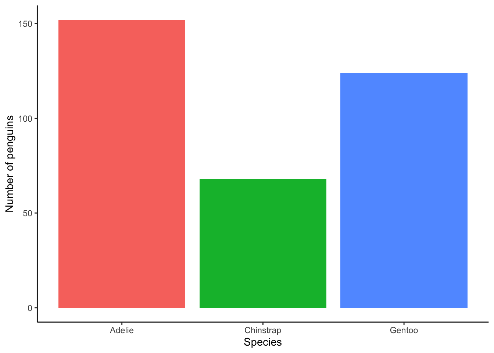
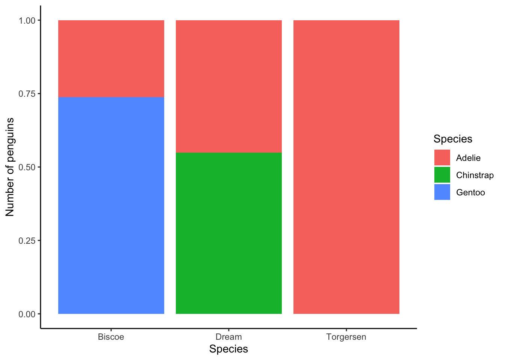
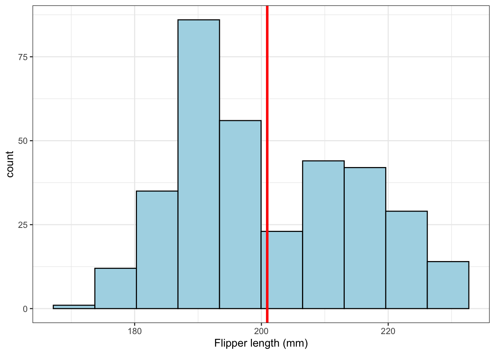
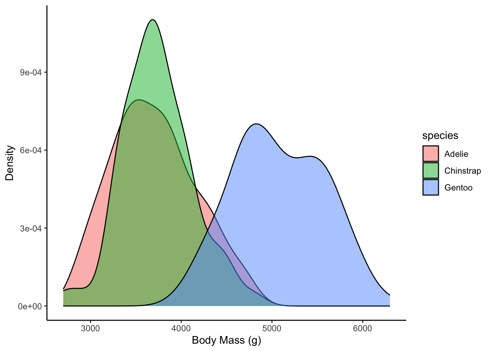
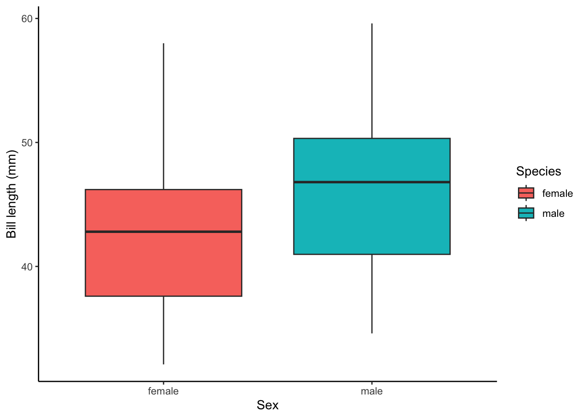
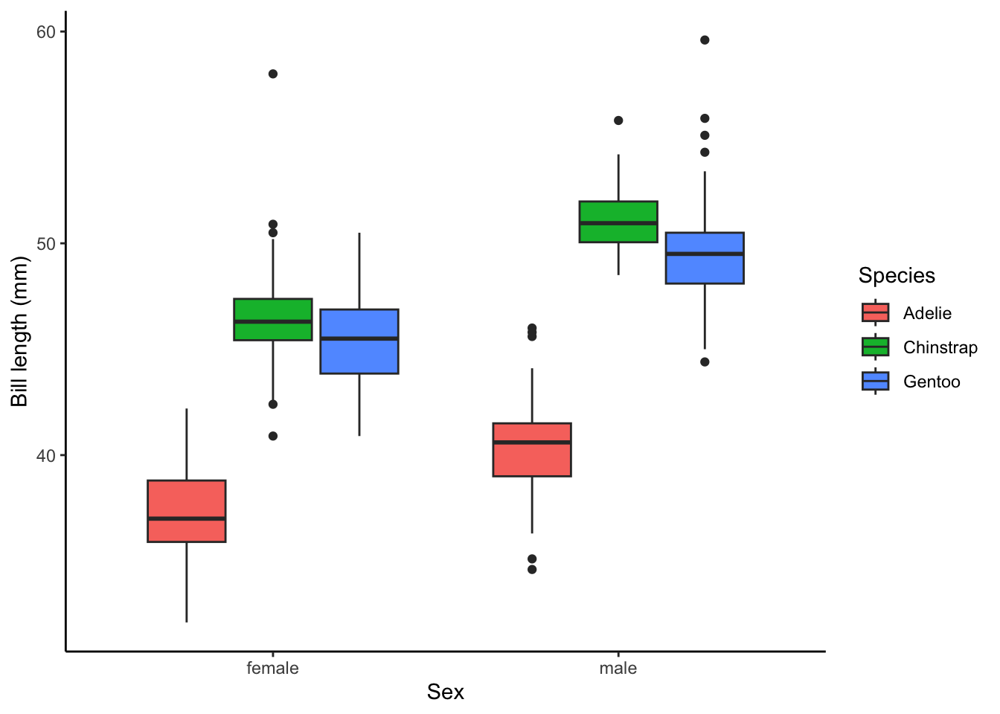
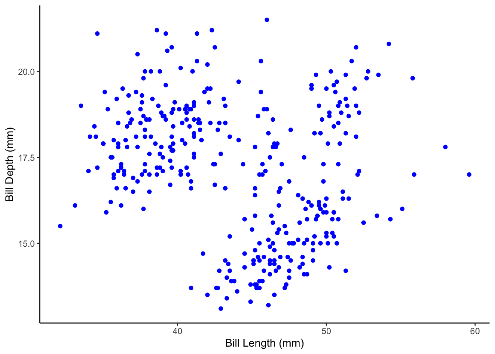
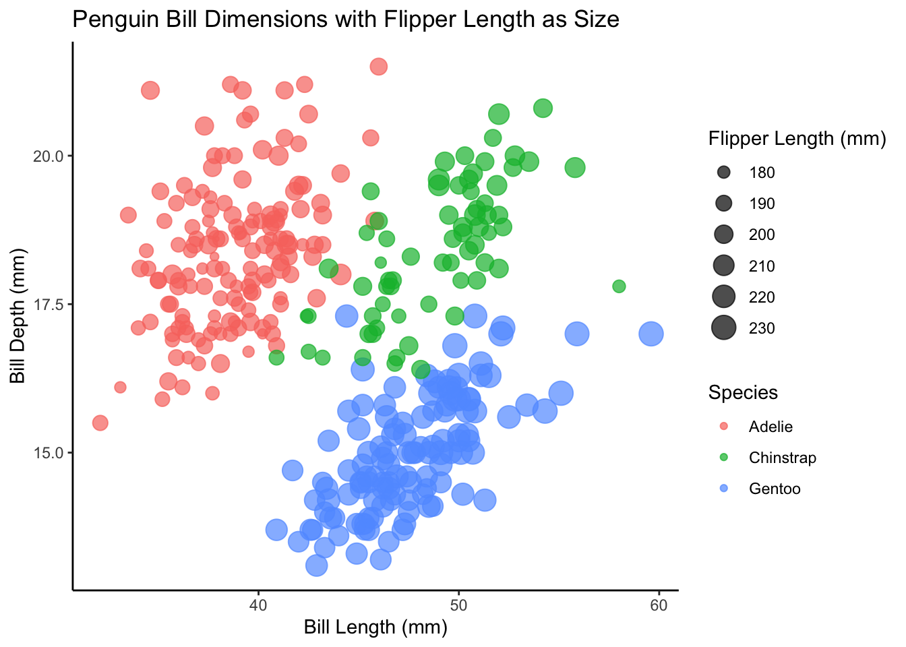
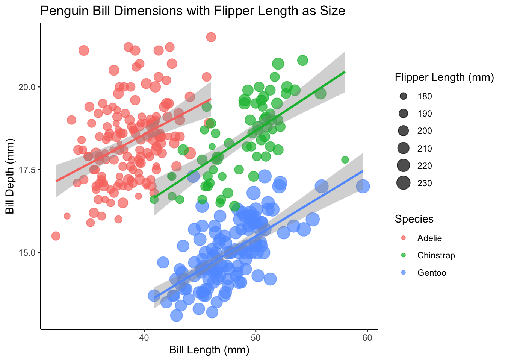

library(ggplot2)
library(dplyr)Homework on Statistical Distributions and Visualization
Palmer Penguins
penguins = read.csv('../data/penguins.csv',
stringsAsFactors = T, row.names = 1)
str(penguins)'data.frame': 344 obs. of 7 variables:
$ species : Factor w/ 3 levels "Adelie","Chinstrap",..: 1 1 1 1 1 1 1 1 1 1 ...
$ island : Factor w/ 3 levels "Biscoe","Dream",..: 3 3 3 3 3 3 3 3 3 3 ...
$ bill_length_mm : num 39.1 39.5 40.3 NA 36.7 39.3 38.9 39.2 34.1 42 ...
$ bill_depth_mm : num 18.7 17.4 18 NA 19.3 20.6 17.8 19.6 18.1 20.2 ...
$ flipper_length_mm: int 181 186 195 NA 193 190 181 195 193 190 ...
$ body_mass_g : int 3750 3800 3250 NA 3450 3650 3625 4675 3475 4250 ...
$ sex : Factor w/ 3 levels "","female","male": 3 2 2 1 2 3 2 3 1 1 ...The penguins dataset contains data collected on three penguin species (Adelie, Chinstrap, and Gentoo) from three islands (Torgersen, Biscoe, and Dream) in the Palmer Archipelago, Antarctica.
It includes measurements like:
bill_length_mmandbill_depth_mm- dimensions of the penguin’s bill.flipper_length_mm- length of the penguin’s flippers.body_mass_g- weight of the penguins in grams.island- the island where the penguins were observed.sex: the gender of the penguin.
Some rows may contain missing values (e.g., in sex column).

# str(penguins)
# summary(penguins)1.* Delete rows containing only NAs in columns except species, sex, island.
colSums(is.na(penguins))
penguins[!complete.cases(penguins),]
penguins = penguins[complete.cases(penguins),]
# penguins %>% head()- use
complete.cases()and remember the ways we filtered datasets
2. Create bar plot to show the number of observations (rows) for each species and delete legend (if ggplot used).
Label the axes and legends
Colors (
fill) should also be different for each speciestheme_classic(), ifggplotusedThis task can be solved using either basic R or
ggplotTip: use
table()(basic R andggplot) orgeom_bar()(ggplot)Don’t forget to delete legend if ggplot used
# species_counts <- table(penguins$species)
# barplot(species_counts, main = "Number of Penguins by Species",
# xlab = "Species", ylab = "Count", col = c("blue", "red", "yellow"))
penguins %>% ggplot(aes(x=species, fill=species)) +
geom_bar() + labs(x='Species', fill='Species',
y='Number of penguins') +
theme_classic() + theme(legend.position = "none")
3. Create stacked barplot scaled from 0 to 1 to show the proportion of species on each island.
Label the axes and legends
theme_classic()fillshould representspecies.Don’t forget change
positionparameter
penguins %>% ggplot(aes(x=island, fill=species)) +
geom_bar(position = 'fill') +
labs(x='Species', fill='Species', y='Number of penguins') +
theme_classic() 
4. Create a histogram for the flipper_length_mm and draw the vertical line to show mean value
Label the axes
Set the number of breaks to 10
The histogram fill should be
"lightblue"and border (color) should be"black"Vertical line color =
'red',width = 1.2theme_bw(), ifggplotusedThis task can be solved using either basic R or
ggplot
# hist(penguins$flipper_length_mm, breaks = 10, col = "lightblue",
# main = "Histogram of Bill Length",
# xlab = "Bill Length (mm)")
# abline(v=mean(penguins$flipper_length_mm), lwd=2, col='red')
penguins %>% ggplot(aes(x=flipper_length_mm)) +
geom_histogram(col='black', fill='lightblue',bins = 10) +
geom_vline(aes(xintercept = mean(flipper_length_mm, na.rm=T)), col='red', lwd=1.2) +
labs(x='Flipper length (mm)') + theme_bw()
5. Create a density plot for the body_mass_g variable. Fill the density regions based on species.
Label the axes (y-axis is
Density)fillshould different for each speciesDensity plot should have
alpha=0.5theme_classic()
penguins %>% ggplot(aes(x = body_mass_g, fill = species)) +
geom_density(alpha = 0.5) +
labs(x = "Body Mass (g)",
y = "Density") +
theme_classic()
6. Create a boxplots grouped by sex to compare bill_length_mm values. Save the plot in variable and show the plot.
Filter out observations without known
sex(!)Label the axes and legends
Colors (
fill) should also be different for eachsextheme_classic()When you save the plot in a variable, chart is not displayed. Don’t forget to show the plot by writing the variable name on a new line!
p = penguins %>% filter(sex != '') %>%
ggplot(aes(x=sex, y=bill_length_mm, fill=sex)) +
geom_boxplot() + theme_classic() +
xlab('Sex') + ylab('Bill length (mm)') + labs(fill='Species')
p
7. Change the chart above: for each sex there must be 3 colored boxplots for each species. Each species should be specifically colored (fill).
- Tip: just add (
+) correspondingaes(...)to the variable
p + aes(fill=species) + labs(fill='Species')
8. Create a scatter plot to show the relationship between bill_length_mm and bill_depth_mm.
Label the axes
Make dots colored filled with
'blue'Use
theme_classic, ifggplotusedThis task can be solved using either basic R or
ggplot
# plot(penguins$bill_length_mm, penguins$bill_depth_mm,
# xlab = "Bill Length (mm)",
# ylab = "Bill Depth (mm)",
# main = "Bill Length vs Bill Depth", col = "blue", pch = 19)
penguins %>% ggplot(aes(x=bill_length_mm, y=bill_depth_mm)) +
geom_point(col='blue') +
xlab('Bill Length (mm)') + ylab('Bill Depth (mm)') +
theme_classic() 
9. Create a Bubble plot: a scatter plot depicting the relationships between length_last_mm and depth_last_mm, with colored dots representing species and sizes reflecting length_last_mm.
Label the axes and legends
Points should have
alpha=0.7theme_classic()
bubble = ggplot(penguins, aes(x = bill_length_mm, y = bill_depth_mm,
color = species, size = flipper_length_mm)) +
geom_point(alpha = 0.7) +
labs(title = "Penguin Bill Dimensions with Flipper Length as Size",
x = "Bill Length (mm)",
y = "Bill Depth (mm)",
size = "Flipper Length (mm)",
color = 'Species') +
theme_classic()
bubble
10*. Add geom_smooth() to the above plot to explore the linear relationship between bill depth and length
- To do that you should save plot above in variable and add
geom_smooth() geom_smooth()parameters are:method = 'lm', show.legend = F
bubble + geom_smooth(method = 'lm', show.legend = F)